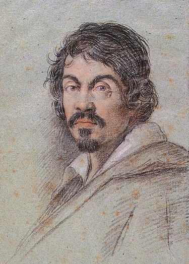

Michelangelo Merisi da Caravaggio (Milán, 29 de septiembre de 1571-Porto Ercole, 18 de julio de 1610), conocido como Caravaggio, fue un pintor italiano, activo en Roma, Nápoles, Malta y Sicilia entre 1593 y 1610. Su pintura combina una observación realista de la figura humana, tanto en lo físico como en lo emocional, con un uso dramático de la luz, lo cual ejerció una influencia decisiva en la formación de la pintura del Barroco.